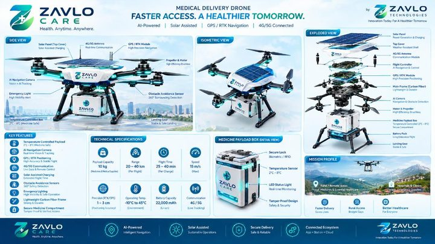
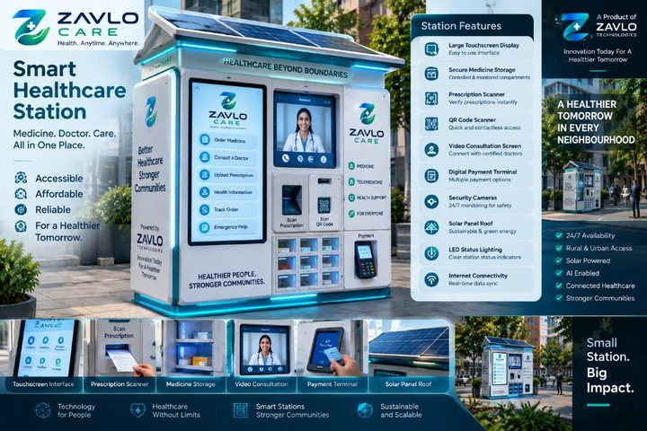
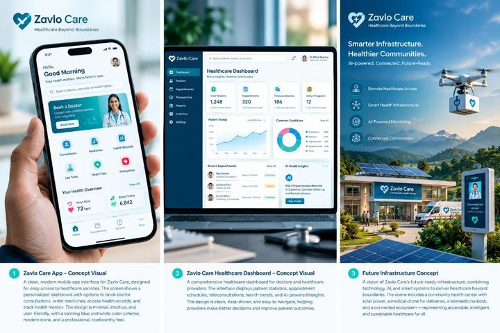

Healthcare should move at the speed of life.
Across urban centers and remote communities, physical distance and fragmented logistics delay critical interventions. ZAVLO Technologies bridges these gaps through connected autonomous supply channels, point-of-care smart stations, and digital clinical telemetry.
Rapid Medical Transit
Sub-30 minute emergency dispatch across challenging terrains and congested metropolitan areas.
Decentralized Access
24/7 solar-resilient diagnostic and dispensing stations embedded directly in neighborhood transit hubs.
Real-Time Telemetry
End-to-end sensor integration connecting patients, clinicians, and pharmaceutical storage in real time.
Climate Resilience
Clean solar microgrids and active cold-chain insulation ensuring zero-emission medical delivery.
One Unified Healthcare Network
Four interconnected technological pillars collaborating seamlessly to provide continuous, unbroken healthcare delivery.
Autonomous Medical Logistics
AI-piloted, solar-assisted drones providing rapid cold-chain transport for organs, blood products, and essential pharmaceuticals.
Smart Healthcare Stations
Autonomous neighborhood health kiosks offering 24/7 tele-consultations, vitals diagnostics, and automated optical prescription dispensing.
Digital Healthcare Platform
Unified clinical software linking patient mobile records, physician dashboards, and real-time station inventory telemetry.
Intelligent Infrastructure
Edge AI routing engines, clean renewable microgrids, and cryptographic telemetry securing vital regional healthcare operations.
Autonomous Medical Lifelines
Engineered for high-reliability medical transport beyond visual line of sight (BVLOS). Our delivery drones navigate complex weather and terrains to deliver time-sensitive biological assets.
Rapid deployment across municipal and rural zones.
Precision temperature-monitored payload chamber.
Solar-augmented photovoltaic upper wing array.
Autonomous weather avoidance and precision landing.

DRONE TELEMETRY ACTIVEAutonomous Community Health Kiosks
Decentralized physical access points that bring medical professionals and vital medicines directly into neighborhoods, transit hubs, and rural centers.
Instant audio-visual connection to licensed specialists.
Automated laser verification and climate-controlled release.
Rooftop canopy battery storage for 24/7 uptime.
Tamper-evident medical inventory compartment.

SMART STATION ACTIVEClosed-Loop Healthcare Platform
Data and physical assets move through an unbroken, synchronized verification pipeline from initial patient encounter to point-of-care delivery.

PLATFORM TELEMETRY LIVEMobile App & Station
Edge AI & Triage
Physician Signoff
Automated Dispensing
Autonomous Dispatch
Intelligent Regional Operations
Reliable distributed infrastructure architected for critical medical continuity under adverse network and environmental conditions.
Edge AI Flight Routing
Decentralized flight path computation optimizing energy expenditure, wind patterns, and airspace safety corridors.
Microgrid Integration
Independent solar generation coupled with smart battery balancing, ensuring zero reliance on vulnerable grid feeds.
Cryptographic Telemetry
Zero-trust, end-to-end encrypted communication links safeguarding patient vitals and flight command integrity.
Fail-Safe Hardware
Dual-motor redundancy and automated emergency payload protection protocols on all aerial and station hardware.
Precision Healthcare Engineering
Manufactured to rigorous aerospace and medical standards for extreme operational reliability.
High-Efficiency Carbon Rotors
Low-noise aerodynamic propellers engineered for urban and night operations.
Active Solid-State Cooling
Peltier-based payload stabilization maintaining strict cold-chain compliance.
Automated Robotic Carousel
Laser-verified medicine delivery ensuring zero dispensation errors.
Real-Time Sensor Bus
Sub-10ms latency telemetry stream between flight controller and cloud dashboard.
Transforming Healthcare Access Globally.
We envision a world where critical care is never hindered by geography, terrain, or broken infrastructure. ZAVLO unites robotics, clean energy, and software into a single continuous lifeline.
Sujan Prabu
Founder, ZAVLO Technologies"By merging autonomous robotics with decentralized healthcare stations, we are building infrastructure that saves lives when every second counts."
Instagram: the.sujanprabu.23